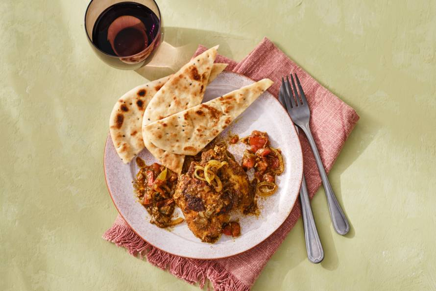

Vindaloo is one of the curries of Indian cuisine in England. And when you taste it with its start and tender chicken, you immediately understand why.
Ingredients
- 2tl Korianderzaad
- 1tl komenzaad
- 2tl mosterdzaad
- 1/2 kaneelstokje
- Voor meer zie: Ingredienten
Recipe instructions
- Verwarm een koekenpan zonder boter of olie op middelhoog vuur en rooster het korianderzaad, komijnzaad en mosterdzaad 2 min. Haal uit de pan en maal met het halve kaneelstokje, de kruidnagel, kardemom, peperkorrels en chilivlokken fijn in de keukenmachine.
- Snijd de tenen knoflook grof. Schil de gember en snijd grof. Snijd het steeltje van de rode peper. Halveer de peper in de lengte en verwijder met een scherp mesje eventueel de zaadlijsten. Snijd het vruchtvlees grof. Voeg de knoflook, gember, peper en azijn toe aan de keukenmachine en maal alles tot een puree.
- Doe de kip, puree, kurkuma en het zout in een kom en meng alles goed. Laat 1 uur marineren in de koelkast.
- Snijd de uien in halve ringen. Snijd de tomaten in blokjes van ca. 1 cm. Verhit de olie in een braadpan op middelhoog vuur. Roerbak de uien 3 min. Voeg de tomaten, tamarindepasta en kokosbloesemsuiker toe en kook 2 min. mee.
- Voeg de kip met de marinade toe, meng alles goed en breng aan de kook. Doe de deksel op de pan en gaar de kip in 45 min. op laag vuur.
Return to top
Return to main page